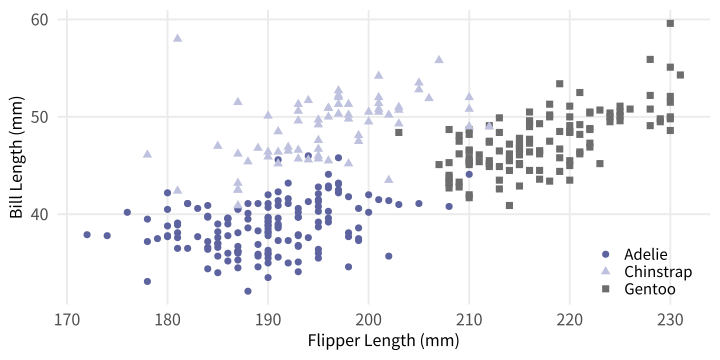
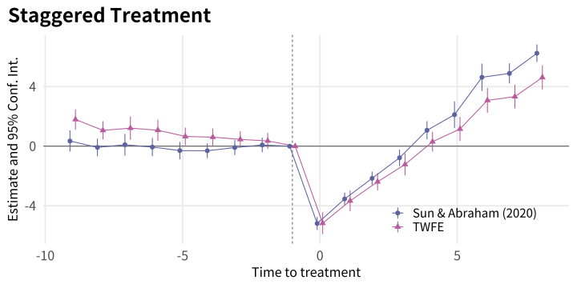
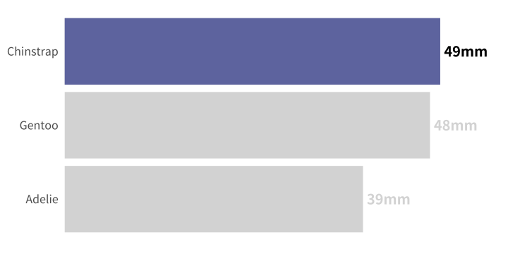
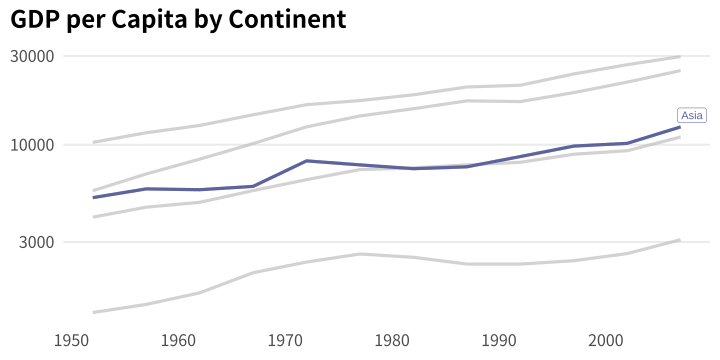
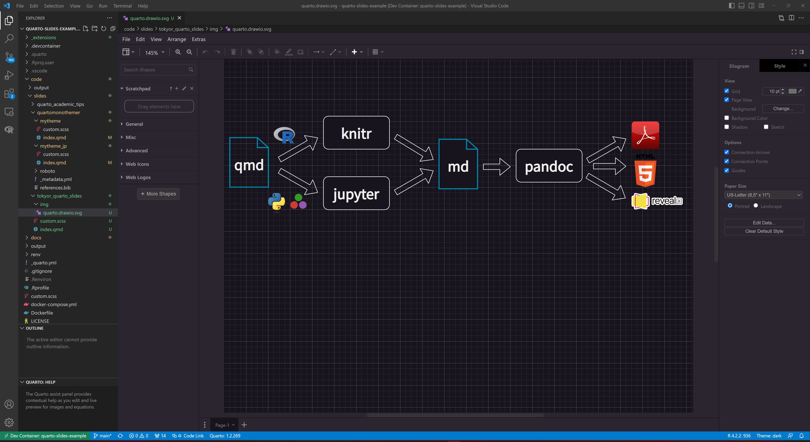

Non-designer’s Quarto Presentation
Kazuharu Yanagimoto
March 4, 2023

Quartoとは

- Rを使う場合 knitr が動くので, ほとんどRmarkdownと変わらない
- Rmarkdown と大きく違う点 \(\Rightarrow\) Revealjs スライド
Quarto Revealjs
なぜQuarto/Revealjsなのか?
| デザイン性 | 労力 | 保守性 | |
|---|---|---|---|
| Powerpoint | 👩🎨 | ❌ | ❌ |
| Beamer | ❌ | ✔️ | ✔️ |
| Quarto | ✔️ | ✔️ | ✔️ |
- PowerPointでおしゃれにするには時間がかかる. 内容変更に弱い
- Beamerはダサい.1 デザインの自由度が低く, カスタマイズに \(\LaTeX\) の知識がいる
- Quartoはそこそこの労力でそこそこのデザインのスライドが作れる.
Quarto Revealjsの基本
スライド
- h2レベルのヘッダーでスライドが区切られます
- タイトルなしのスライドは
---で区切ります
フラグメント
より複雑な例はTom Mockのこの部分のプレゼンをみるとよいと思います
コラムレイアウト
.columns というクラスの中で.column とその widthを指定することで, 縦割りにできます. ３つ以上の分割も可能です.
コード
コード: コード表示
コード: コラム表示
コード: コードハイライト
Quarto Design Tips
Quartoのカスタムテーマ
custom.scss
// fonts
$font-family-sans-serif: Montserrat, sans-serif !default;
$font-family-monospace: "Fira Code", monospace !default;
// colors
$body-bg: #fff !default;
$body-color: #272822 !default;
$link-color: #055099 !default;
// headings
$presentation-heading-font: "Josefin Sans", sans-serif !default;
$presentation-heading-color: #1C5253 !default;
$h1-font-size: 1.6em !default;
$h2-font-size: 1.3em !default;
$h3-font-size: 1.15em !default;
$h4-font-size: 1em !default;SASS変数(リスト) をscssファイルの中で指定することで, テーマをカスタムできます
ggplot2: フォント
- サンプルの様に, スライドのフォントと色がグラフとマッチしているとかっこいい
- フォントは以下のように設定すると, 何度も設定しなくて済む
グローバル設定
font_title <- "Josefin Sans"
font_text <- "Montserrat"
size_base <- 20
theme_set(theme_minimal(
base_size = size_base,
base_family = font_text))
theme_update(
plot.title = element_text(
size = size_base * 1.2,
face = "bold",
family = font_title),
panel.grid.minor = element_blank(),
legend.position = "bottom",
plot.title.position = "plot"
)オリジナルテーマ
theme_quarto <- function(
font_title = "Josefin Sans",
font_text = "Montserrat",
size_base = 20) {
theme_minimal(base_family = font_text,
base_size = size_base) +
theme(
plot.title = element_text(
size = size_base * 1.2,
face = "bold",
family = font_title),
panel.grid.minor = element_blank(),
legend.position = "bottom",
plot.title.position = "plot"
)
}ggplot2: 色
デフォルトのカラーパレットを替えたければ, 以下のようにできます
scale_colour_discrete <- function(...) {
scale_colour_manual(values = c("#00AFBB", "#E7B800", "#FC4E07"))
}
scale_fill_discrete <- function(...) {
scale_fill_manual(values = c("#00AFBB", "#E7B800", "#FC4E07"))
}しかし, このやり方だと例外が多く発生してしまったので, 私は基本的に
scale_*_manual()で毎回指定geom_point(color = color_base)なども毎回指定しています
70:25:5の法則

メインとアクセントカラーの選び方は, HUE/360などを参考にすればいいと思います
カラーマップ


gghighlight


- プレゼンの中で話をしたい変数の数は限られていると思います
- すべての色付けを考えるより,
gghighlightで色を絞りましょう
quartomonothemer
kazuyanagimoto/quartomonothemerというパッケージを作りました.
style_mono_quarto()を実行するとcustom.scssが作られるtheme_quarto()というggplot2のテーマが作られる (フォントのみ)- 色は各プロット毎に指定
library(showtext)
library(quartomonothemer)
font_title <- "Noto Sans JP"
font_text <- "Noto Sans JP"
font_code <- "Fira Code"
color_base <- "#0086AB"
font_add_google(font_title)
font_add_google(font_code)
showtext_auto()
style_mono_quarto(
font_title = font_title,
font_text = font_text,
font_code = font_code,
google_fonts = c(font_title, font_code),
color_base = color_base
)テーブル
MarkdownやkableExtraもいいですが, プレゼン用ではgtExtrasが便利だと思います.
gtは文法がkableExtraより, 洗練されているgt_highlight_rows()が簡単できれい. 色はベースカラーの薄い色がおすすめ
細かい調整
一部だけをCSSで見た目を変更したい場合は, 以下のようにstyle環境で調整します.
SASS変数にない部分でデザインの変更をしたい場合は, custom.scssに書くか, Quartoファイルにコードブロックとして書きましょう
VSCode Draw.io Intergration
ちょっとした図の挿入にはDraw.io Intergrationがいいです
- VSCodeであれば, Quartoと同じエディターで図を作成することができる
*.drawio.svg,*.drawio.pngというファイル名ならエクスポートせずに図を使える
Enjoy!
kazuyanagimoto/quartomonothemer・ Codes for Today’s Slides